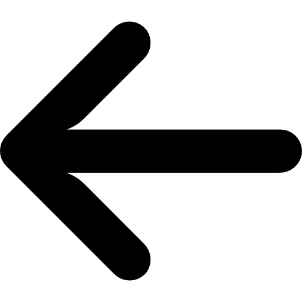
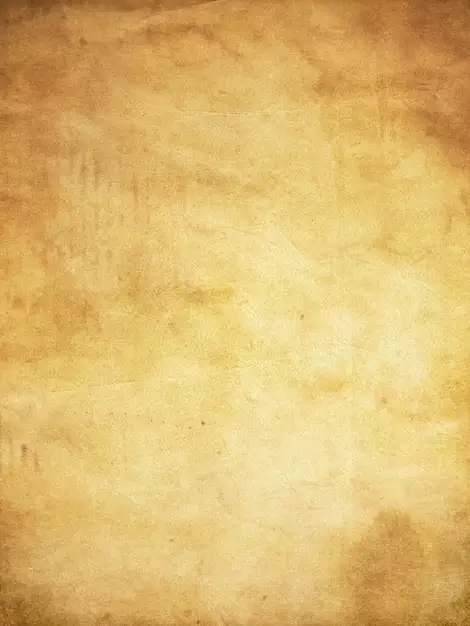
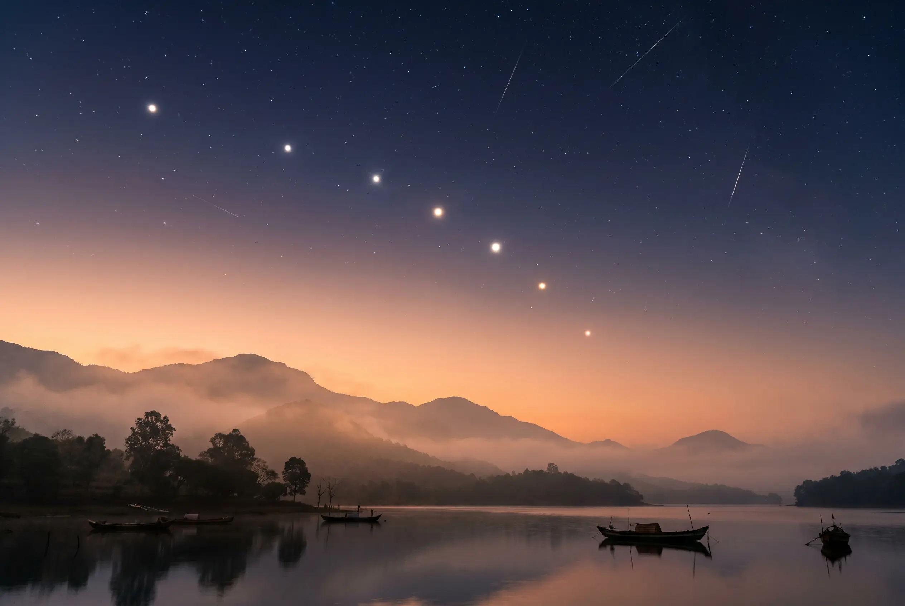

🎯Nhiệm vụ: Cùng quan sát hiện tượng rất hiếm có trong vũ trụ!
Căn chỉnh thước ngắm....0%

Nhiệm vụ lần này khó không phải vì sự phức tạp của những đường nối, mà là lần này điều kiện quan sát khá tệ, có quá nhiều sao khiến tôi khó mà nhận ra các hành tinh...tôi chỉ có thể biết được rằng có một đường thẳng kì lạ được nối bởi 5 "ngôi sao", cùng với 2 "ngôi sao" thấp nhất bầu trời tại thời điểm này...

Hiện tượng cuộc diễu hành của các hành tinhChúng ta vừa giải mã và chứng kiến được những hành tinh góp mặt trong hiện tượng Cuộc diễu hành của các hành tinh (Planet Parade) — một hiện tượng cực hiếm trên bầu trời!